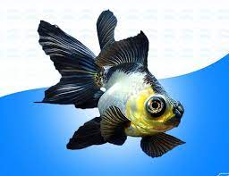
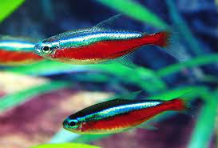

Espécie: Kinguio
- Nome Científico: "Carassius auratus auratus"
- Expectativa de Vida: 5 anos
- Peixe de água doce
- Dieta: Ervilha,pequenos insetos, algas
Espécie: Peixe Palhaço
- Nome Científico: "Amphiprioninae"
- Expectativa de Vida: 8 anos
- Peixe de água salgada
- Dieta: parasitas,pequenos crustáceos, algas
Espécie: Acará-bandeira
- Nome Científico: "Pterophyllum scalare"
- Expectativa de Vida: 5 anos
- Peixe de água doce
- Dieta: Ervilha,pequenos insetos, algas
Espécie: Oscar
- Nome Científico: "Astronotus ocellatus"
- Expectativa de Vida: 10 anos
- Peixe de água doce
- Dieta: Larvas, pequenos peixes, insetos
Espécie: Peixe-leão
- Nome Científico: "Pterois"
- Expectativa de Vida: 10 anos
- Peixe de água salgada
- Dieta: camarões,pequenos peixes, animais invertebrados

Espécie: Néon
- Nome Científico: "Paracheirodon innesi"
- Expectativa de Vida: 3 anos
- Peixe de água doce
- Dieta: Ervilha,pequenos insetos, algas